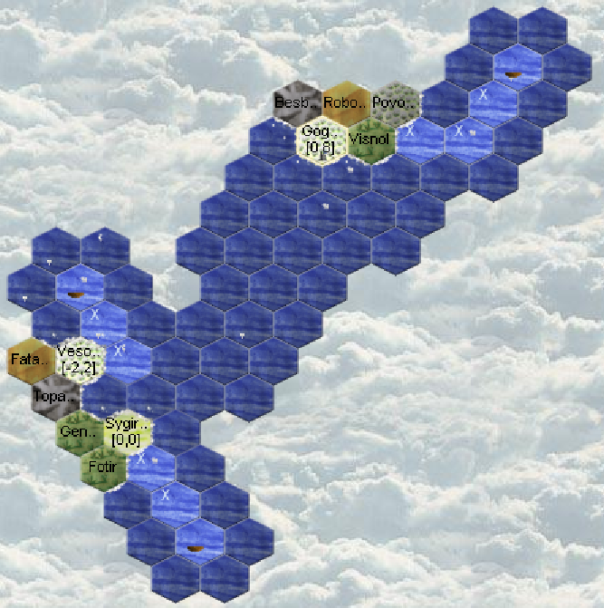

Aquarians: Runde 6
Turn 6 (29/10 4/11)
A third boat is launched!
Not enough wood to build a new boat.

No visits from potential neighbors.
No coasts on the horizon!
Sygirfal
470 silver on Sygirfal
We will spend 400 to recruit 5 new entertainers.
Hammon (4qmp) reached level 3, we will take advantage to teach entertainment to the new ones and to level 1 entertainers.
The LEARN AUTO skill order for the teacher and students, allows leaving the program to optimize the LEARN and TEACH of the skill.
Not having enough wood anymore, Ugarit (4qmj) learns to make carts.
Zimrida (hha6) waits for a second horse and entertainment. The 2 horses will allow him to pull the Halfling's cart if he entrusts it to us.
Plus we'll be a bit tight on silver, so an extra entertainer isn't bad.
The boats explore, those who can bring back money do so.
Diplomacy
Nothing special, and just like in real life, I don't have much time, so I neglect maintaining relations and set that aside.
As it turns out, I'll miss a message about a collaboration proposal, which will have consequences.
Magellan
New tip : how to distinguish between what you can actually see and all the regions what you discovered. In Magellan Right click on the Map then Renderer / Region Renderer / Enable fog of war